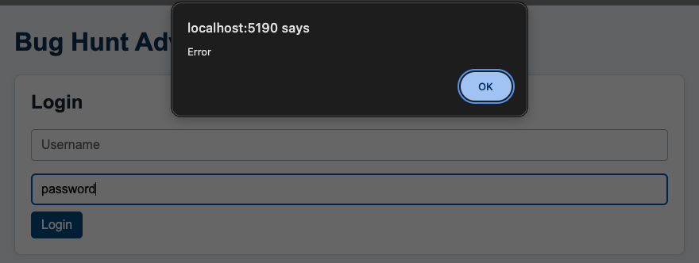
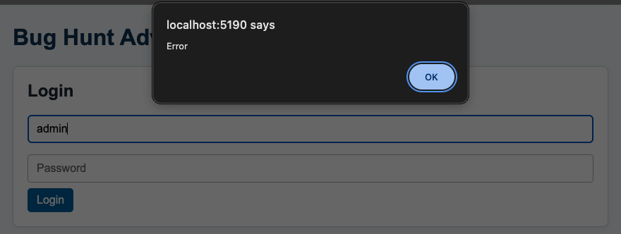
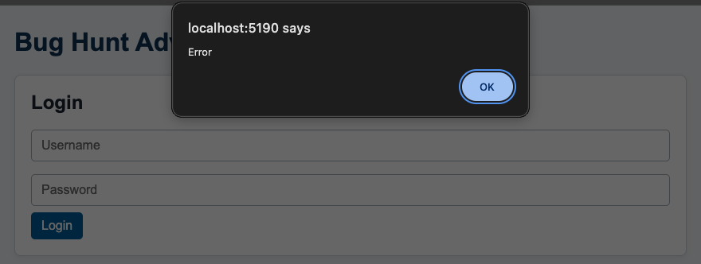
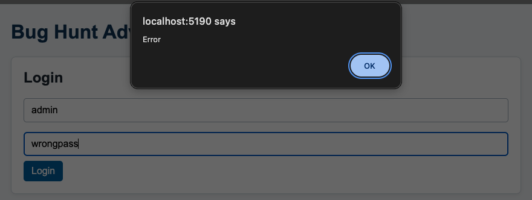
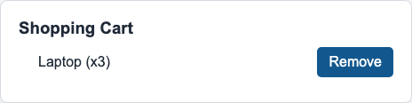
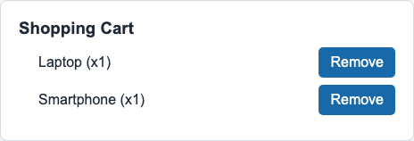
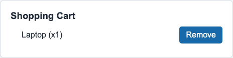
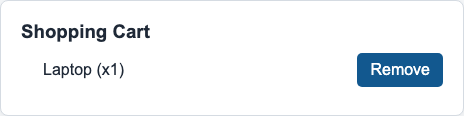

| Student | Yuandong Yang | Student ID | 000949205 |
|---|---|---|---|
| Yuandong.Yang@edu.sait.ca | Course | CPRG-305, Unit 6 Worksheet |
This submission intentionally covers all four features of the CPRG305 Bug Hunt React App (UC-01 to UC-04). Each feature was tested against its use case. Expected results come from the use cases. Tests were executed in the app running locally with Vite.
| Use case | Test cases | Pass | Fail | Bug reports |
|---|---|---|---|---|
| UC-01 Log In to the Application | T-001 to T-007 | 1 | 6 | B-001 to B-006 |
| UC-02 Search for Products | T-008 to T-015 | 8 | 0 | — |
| UC-03 Add a Product to the Shopping Cart | T-016 to T-023 | 8 | 0 | — |
| UC-04 Remove a Product from the Shopping Cart | T-024 to T-028 | 0 | 5 | B-007 to B-011 |
| Test Case ID | Test Objective | Test Steps | Expected Result | Actual Result | Status | Bug ID |
|---|---|---|---|---|---|---|
| T-001 | Valid username and valid password (main flow) |
| Access granted; "Welcome, admin!" is displayed. | Access granted; "Welcome, admin!" is displayed with the Search, Products and Cart sections. | Pass | — |
| T-002 | Blank username only (A1) |
| Access denied; "Username cannot be empty." is displayed. | Access denied; the Login form stays on screen. A browser alert shows only the text "Error". | Fail | B-001 |
| T-003 | Blank password only (A2) |
| Access denied; "Password cannot be empty." is displayed. | Access denied; the Login form stays on screen. A browser alert shows only the text "Error". | Fail | B-002 |
| T-004 | Both fields blank (A3) |
| Access denied; "Username and password cannot be empty." is displayed. | Access denied; the Login form stays on screen. A browser alert shows only the text "Error". | Fail | B-003 |
| T-005 | Valid username, invalid password (A4) |
| Access denied; "Invalid credentials." is displayed. | Access denied; the Login form stays on screen. A browser alert shows only the text "Error". | Fail | B-004 |
| T-006 | Invalid username, valid password (A4) |
| Access denied; "Invalid credentials." is displayed. | Access denied; the Login form stays on screen. A browser alert shows only the text "Error". | Fail | B-005 |
| T-007 | Invalid username and invalid password (A4) |
| Access denied; "Invalid credentials." is displayed. | Access denied; the Login form stays on screen. A browser alert shows only the text "Error". | Fail | B-006 |
| Test Case ID | Test Objective | Test Steps | Expected Result | Actual Result | Status | Bug ID |
|---|---|---|---|---|---|---|
| T-008 | Exact product name |
| Only Laptop is listed. | Only Laptop is listed. | Pass | — |
| T-009 | Lowercase product name (case-insensitive) |
| Only Laptop is listed. | Only Laptop is listed. | Pass | — |
| T-010 | Uppercase product name (case-insensitive) |
| Only Headphones is listed. | Only Headphones is listed. | Pass | — |
| T-011 | Partial text at the start of a name |
| Only Smartphone is listed. | Only Smartphone is listed. | Pass | — |
| T-012 | Partial text inside a name |
| Only Laptop is listed. | Only Laptop is listed. | Pass | — |
| T-013 | Text matching more than one product |
| Smartphone and Headphones are listed; Laptop is not. | Smartphone and Headphones are listed; Laptop is not. | Pass | — |
| T-014 | Text matching no product (A1) |
| No products are listed. | The results list is empty. | Pass | — |
| T-015 | Empty search field after clearing text (A2) |
| Laptop, Smartphone and Headphones are all listed. | Laptop, Smartphone and Headphones are all listed. | Pass | — |
| Test Case ID | Test Objective | Test Steps | Expected Result | Actual Result | Status | Bug ID |
|---|---|---|---|---|---|---|
| T-016 | Empty cart before any add (A2) |
| "Your cart is empty." is displayed. | "Your cart is empty." is displayed. | Pass | — |
| T-017 | Add Laptop once |
| Cart shows Laptop with quantity 1. | Cart shows "Laptop (x1)". | Pass | — |
| T-018 | Add Smartphone once |
| Cart shows Smartphone with quantity 1. | Cart shows "Smartphone (x1)". | Pass | — |
| T-019 | Add Headphones once |
| Cart shows Headphones with quantity 1. | Cart shows "Headphones (x1)". | Pass | — |
| T-020 | Add the same product twice (A1) |
| One Laptop line with quantity 2. | One line: "Laptop (x2)". | Pass | — |
| T-021 | Add the same product several times |
| One Laptop line with quantity 4. | One line: "Laptop (x4)". | Pass | — |
| T-022 | Add multiple different products |
| Three lines, each with quantity 1. | "Laptop (x1)", "Smartphone (x1)", "Headphones (x1)". | Pass | — |
| T-023 | One product's quantity does not affect another |
| Laptop quantity 3; Smartphone stays at 1. | "Laptop (x3)", "Smartphone (x1)". | Pass | — |
| Test Case ID | Test Objective | Test Steps | Expected Result | Actual Result | Status | Bug ID |
|---|---|---|---|---|---|---|
| T-024 | Remove one unit when quantity is greater than 1 (main flow) |
| Laptop quantity decreases to 2. | Cart still shows "Laptop (x3)". Nothing changes. | Fail | B-007 |
| T-025 | Remove a product whose quantity is 1 (A1) |
| Laptop line disappears; "Smartphone (x1)" remains. | Cart still shows "Laptop (x1)" and "Smartphone (x1)". | Fail | B-008 |
| T-026 | Remove one product while others remain |
| Laptop line disappears; "Smartphone (x2)" is unchanged. | Cart still shows "Laptop (x1)" and "Smartphone (x2)". | Fail | B-009 |
| T-027 | Remove the final product (A2) |
| Cart shows "Your cart is empty." | Cart still shows "Laptop (x1)"; the empty-cart message does not appear. | Fail | B-010 |
| T-028 | Other products stay unchanged when one is decreased |
| Smartphone decreases to 2; Laptop stays at 2. | Cart still shows "Laptop (x2)" and "Smartphone (x3)". Smartphone is not decreased. | Fail | B-011 |
Evidence notes: login screenshots are window captures, because the app's "Error" message is a native browser alert that a page screenshot cannot show. Before each capture the Password field was switched to plain-text display so the typed value is visible; this changes display only, not the login check. Remove screenshots show the Shopping Cart section immediately before and after the click.
| Field | Your Input |
|---|---|
| Bug ID | B-001 |
| Test Case ID | T-002 |
| Summary | Blank username shows a generic "Error" alert instead of "Username cannot be empty." |
| Steps to Reproduce |
|
| Expected Result | Access denied; "Username cannot be empty." is displayed. |
| Actual Result | Access denied; the Login form stays on screen. A browser alert shows only the text "Error". |
| Severity | Medium |
| Evidence | Window capture after selecting Login: Username is empty, Password shows "password", and the browser alert at the top of the page reads only "Error".  |
| Field | Your Input |
|---|---|
| Bug ID | B-002 |
| Test Case ID | T-003 |
| Summary | Blank password shows a generic "Error" alert instead of "Password cannot be empty." |
| Steps to Reproduce |
|
| Expected Result | Access denied; "Password cannot be empty." is displayed. |
| Actual Result | Access denied; the Login form stays on screen. A browser alert shows only the text "Error". |
| Severity | Medium |
| Evidence | Window capture after selecting Login: Username shows "admin", Password is empty, and the browser alert at the top of the page reads only "Error".  |
| Field | Your Input |
|---|---|
| Bug ID | B-003 |
| Test Case ID | T-004 |
| Summary | Blank username and password show a generic "Error" alert instead of "Username and password cannot be empty." |
| Steps to Reproduce |
|
| Expected Result | Access denied; "Username and password cannot be empty." is displayed. |
| Actual Result | Access denied; the Login form stays on screen. A browser alert shows only the text "Error". |
| Severity | Medium |
| Evidence | Window capture after selecting Login: both fields are empty, and the browser alert at the top of the page reads only "Error".  |
| Field | Your Input |
|---|---|
| Bug ID | B-004 |
| Test Case ID | T-005 |
| Summary | Valid username with a wrong password shows "Error" instead of "Invalid credentials." |
| Steps to Reproduce |
|
| Expected Result | Access denied; "Invalid credentials." is displayed. |
| Actual Result | Access denied; the Login form stays on screen. A browser alert shows only the text "Error". |
| Severity | Low |
| Evidence | Window capture after selecting Login: Username shows "admin", Password shows "wrongpass", and the browser alert at the top of the page reads only "Error".  |
| Field | Your Input |
|---|---|
| Bug ID | B-005 |
| Test Case ID | T-006 |
| Summary | Unknown username with the valid password shows "Error" instead of "Invalid credentials." |
| Steps to Reproduce |
|
| Expected Result | Access denied; "Invalid credentials." is displayed. |
| Actual Result | Access denied; the Login form stays on screen. A browser alert shows only the text "Error". |
| Severity | Low |
| Evidence | Window capture after selecting Login: Username shows "user1", Password shows "password", and the browser alert at the top of the page reads only "Error". |
| Field | Your Input |
|---|---|
| Bug ID | B-006 |
| Test Case ID | T-007 |
| Summary | Unknown username with a wrong password shows "Error" instead of "Invalid credentials." |
| Steps to Reproduce |
|
| Expected Result | Access denied; "Invalid credentials." is displayed. |
| Actual Result | Access denied; the Login form stays on screen. A browser alert shows only the text "Error". |
| Severity | Low |
| Evidence | Window capture after selecting Login: Username shows "user1", Password shows "wrongpass", and the browser alert at the top of the page reads only "Error". |
No bug reports: all 8 test cases passed.
No bug reports: all 8 test cases passed.
| Field | Your Input |
|---|---|
| Bug ID | B-007 |
| Test Case ID | T-024 |
| Summary | Remove does not decrease the quantity of a product with quantity 3. |
| Steps to Reproduce |
|
| Expected Result | Laptop quantity decreases to 2. |
| Actual Result | Cart still shows "Laptop (x3)". Nothing changes. |
| Severity | Medium |
| Evidence | Shopping Cart section before and after selecting Remove beside Laptop. Both images show "Laptop (x3)". In the after image that Remove button is darker because the pointer is still on it from the click.  |
| Field | Your Input |
|---|---|
| Bug ID | B-008 |
| Test Case ID | T-025 |
| Summary | Remove does not delete a product line whose quantity is 1. |
| Steps to Reproduce |
|
| Expected Result | Laptop line disappears; "Smartphone (x1)" remains. |
| Actual Result | Cart still shows "Laptop (x1)" and "Smartphone (x1)". |
| Severity | Medium |
| Evidence | Shopping Cart section before and after selecting Remove beside Laptop. Both images show "Laptop (x1)" and "Smartphone (x1)". In the after image that Remove button is darker because the pointer is still on it from the click.  |
| Field | Your Input |
|---|---|
| Bug ID | B-009 |
| Test Case ID | T-026 |
| Summary | Removing one product while others remain leaves the selected product in the cart. |
| Steps to Reproduce |
|
| Expected Result | Laptop line disappears; "Smartphone (x2)" is unchanged. |
| Actual Result | Cart still shows "Laptop (x1)" and "Smartphone (x2)". |
| Severity | Medium |
| Evidence | Shopping Cart section before and after selecting Remove beside Laptop. Both images show "Laptop (x1)" and "Smartphone (x2)". In the after image that Remove button is darker because the pointer is still on it from the click. |
| Field | Your Input |
|---|---|
| Bug ID | B-010 |
| Test Case ID | T-027 |
| Summary | Removing the last product does not empty the cart or show "Your cart is empty." |
| Steps to Reproduce |
|
| Expected Result | Cart shows "Your cart is empty." |
| Actual Result | Cart still shows "Laptop (x1)"; the empty-cart message does not appear. |
| Severity | Medium |
| Evidence | Shopping Cart section before and after selecting Remove beside Laptop. Both images show "Laptop (x1)" and no "Your cart is empty." message. In the after image that Remove button is darker because the pointer is still on it from the click.   |
| Field | Your Input |
|---|---|
| Bug ID | B-011 |
| Test Case ID | T-028 |
| Summary | Remove does not decrease the selected product when the cart has several products. |
| Steps to Reproduce |
|
| Expected Result | Smartphone decreases to 2; Laptop stays at 2. |
| Actual Result | Cart still shows "Laptop (x2)" and "Smartphone (x3)". Smartphone is not decreased. |
| Severity | Medium |
| Evidence | Shopping Cart section before and after selecting Remove beside Smartphone. Both images show "Laptop (x2)" and "Smartphone (x3)". In the after image that Remove button is darker because the pointer is still on it from the click. |
Which bug discovered had the highest Severity and why?
The highest severity found was Medium; no bug reached High because the app never crashed or lost data. The most valuable finding is the Remove from Cart defect, and B-010 in particular: removing the last product neither empties the cart nor shows "Your cart is empty." B-007 to B-011 together show that selecting Remove has no effect in any cart state, so an entire feature does not work and the user has no way to take an unwanted item out of the order. The login bugs B-001 to B-003 are also Medium, because the required-field messages are missing, but the login gate itself still works: every invalid attempt is denied and admin / password is accepted. B-004 to B-006 are Low, since access is correctly denied with a generic message and only the wording differs from "Invalid credentials."
During the activity, did you focus more on happy paths (testing what should work) or edge cases (testing boundaries and unexpected inputs)? Why is it important to explore both?
Most of my effort went into edge cases. Of the 28 test cases, six are happy paths (T-001, T-008, T-017 to T-019 and T-024), and the other 22 cover blank inputs, wrong credential combinations, case changes, partial and empty searches, repeated adds, mixed products, and boundary quantities. Both kinds were needed. For Login, the happy path passed and every defect appeared only in the edge cases, so happy-path testing alone would have reported login as working. For Remove from Cart, the happy path failed at once, and the edge cases showed that the defect affects every quantity and every cart state rather than one corner case. Search and Add to Cart passed both kinds, which is evidence that their business rules hold, not only their main flow.
What is the most critical component of a good bug report? (Is it the Summary, Steps to Reproduce, or Severity?) Explain your answer.
Steps to Reproduce is the most critical part of a good bug report. Every defect here depends on precise input or state: which login field is blank, which username and password pair is entered, or which products and quantities are in the cart before Remove is selected. Exact numbered steps let a developer rebuild that state in under a minute, see the same result, and confirm the fix afterwards. The Summary helps triage and the Severity sets priority, but a report that cannot be reproduced cannot be acted on.